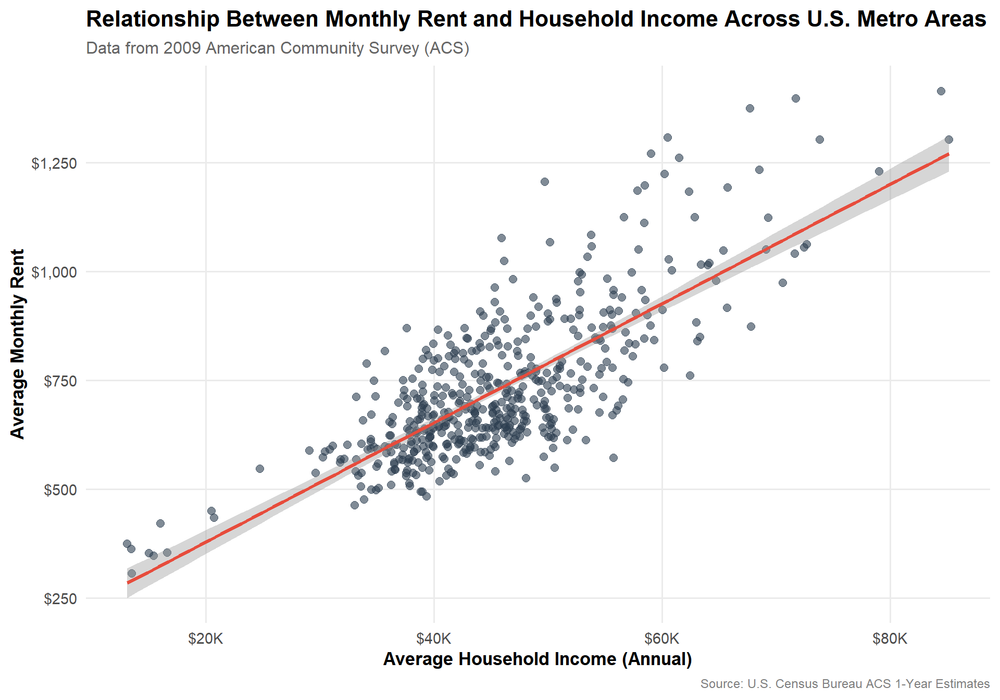
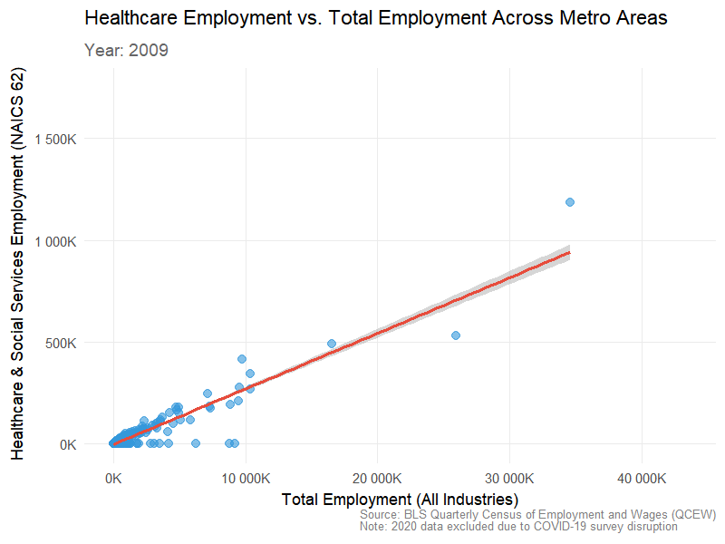
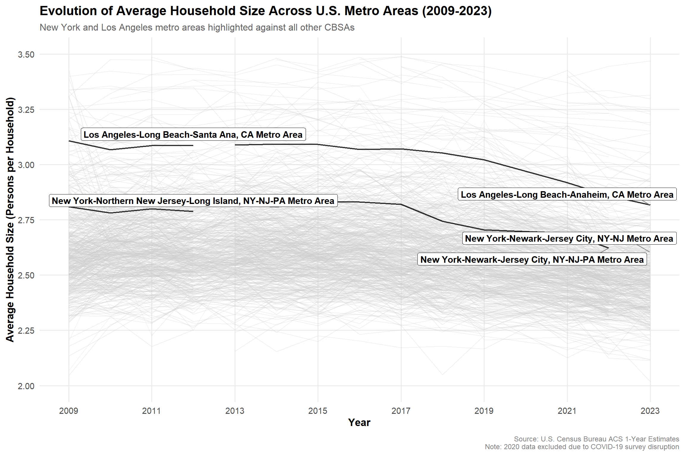
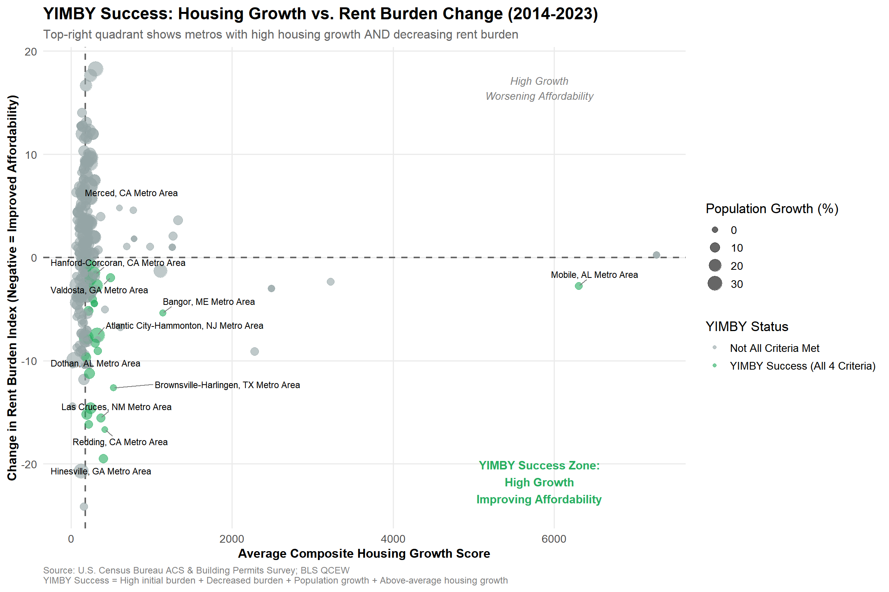
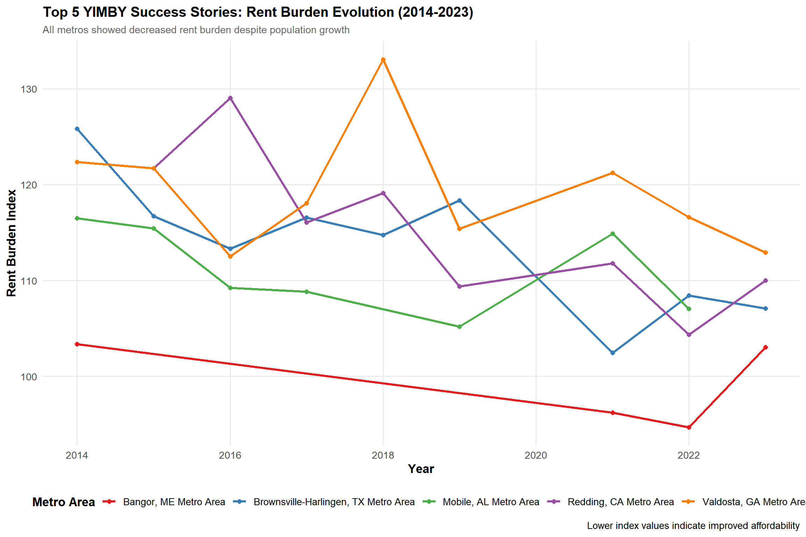
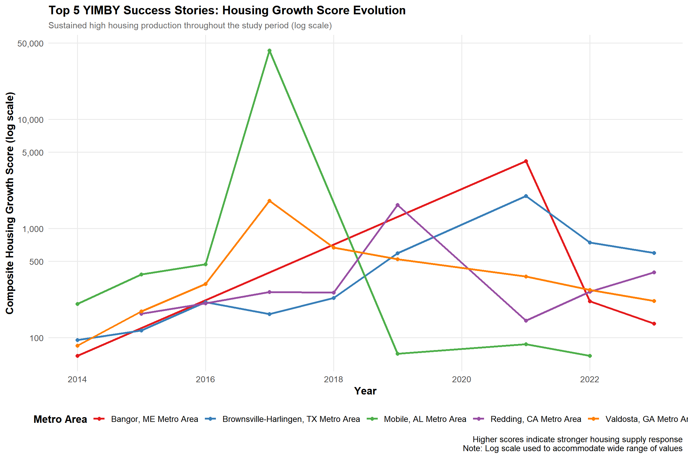

Mini-Project 02 — Making Backyards Affordable for All
Author
Hariprasad Reddy Kotakondla
Introduction
Housing affordability has become one of the most pressing urban policy challenges in the United States.
This mini-project explores how different metropolitan areas (CBSAs) vary in their ability to make housing more accessible by combining public data from the U.S. Census Bureau and the Bureau of Labor Statistics (BLS).
Using American Community Survey (ACS) data on income, rent, population, and households, along with Building Permits Survey and employment–wage data from the BLS, this analysis identifies cities that exemplify “YIMBY” (Yes In My Backyard) growth—where new housing development aligns with improved affordability.
The project demonstrates key skills in data integration, cleaning, and visualization using R, while laying the groundwork for constructing metrics of rent burden and housing growth to support a data-driven housing policy brief.
Task 1: Data Acquisition and Preparation
Download American Community Survey (ACS) data (2009–2023) for income, rent, population, and households
if(!dir.exists(file.path("data", "mp02"))){dir.create(file.path("data", "mp02"), showWarnings=FALSE, recursive=TRUE)}library <-function(pkg){## Mask base::library() to automatically install packages if needed## Masking is important here so downlit picks up packages and links## to documentation pkg <-as.character(substitute(pkg))options(repos =c(CRAN ="https://cloud.r-project.org"))if(!require(pkg, character.only=TRUE, quietly=TRUE)) install.packages(pkg)stopifnot(require(pkg, character.only=TRUE, quietly=TRUE))}library(tidyverse)library(glue)library(readxl)library(tidycensus)get_acs_all_years <-function(variable, geography="cbsa",start_year=2009, end_year=2023){ fname <-glue("{variable}_{geography}_{start_year}_{end_year}.csv") fname <-file.path("data", "mp02", fname)if(!file.exists(fname)){ YEARS <-seq(start_year, end_year) YEARS <- YEARS[YEARS !=2020] # Drop 2020 - No survey (covid) ALL_DATA <-map(YEARS, function(yy){ tidycensus::get_acs(geography, variable, year=yy, survey="acs1") |>mutate(year=yy) |>select(-moe, -variable) |>rename(!!variable := estimate) }) |>bind_rows()write_csv(ALL_DATA, fname) }read_csv(fname, show_col_types=FALSE)}# Household income (12 month)INCOME <-get_acs_all_years("B19013_001") |>rename(household_income = B19013_001)# Monthly rentRENT <-get_acs_all_years("B25064_001") |>rename(monthly_rent = B25064_001)# Total populationPOPULATION <-get_acs_all_years("B01003_001") |>rename(population = B01003_001)# Total number of householdsHOUSEHOLDS <-get_acs_all_years("B11001_001") |>rename(households = B11001_001)
Download U.S. Census Building Permits Survey data (2009–2023) for new housing units by CBSA
Download and organize BLS NAICS industry classification codes for linking employment data by sector
library(httr2)library(rvest)get_bls_industry_codes <-function(){ fname <-file.path("data", "mp02", "bls_industry_codes.csv")library(dplyr)library(tidyr)library(readr)if(!file.exists(fname)){ resp <-request("https://www.bls.gov") |>req_url_path("cew", "classifications", "industry", "industry-titles.htm") |>req_headers(`User-Agent`="Mozilla/5.0 (Macintosh; Intel Mac OS X 10.15; rv:143.0) Gecko/20100101 Firefox/143.0") |>req_error(is_error = \(resp) FALSE) |>req_perform()resp_check_status(resp) naics_table <-resp_body_html(resp) |>html_element("#naics_titles") |>html_table() |>mutate(title =str_trim(str_remove(str_remove(`Industry Title`, Code), "NAICS"))) |>select(-`Industry Title`) |>mutate(depth =if_else(nchar(Code) <=5, nchar(Code) -1, NA)) |>filter(!is.na(depth))# These were looked up manually on bls.gov after finding # they were presented as ranges. Since there are only three# it was easier to manually handle than to special-case everything else naics_missing <- tibble::tribble(~Code, ~title, ~depth, "31", "Manufacturing", 1,"32", "Manufacturing", 1,"33", "Manufacturing", 1,"44", "Retail", 1, "45", "Retail", 1,"48", "Transportation and Warehousing", 1, "49", "Transportation and Warehousing", 1 ) naics_table <-bind_rows(naics_table, naics_missing) naics_table <- naics_table |>filter(depth ==4) |>rename(level4_title=title) |>mutate(level1_code =str_sub(Code, end=2), level2_code =str_sub(Code, end=3), level3_code =str_sub(Code, end=4)) |>left_join(naics_table, join_by(level1_code == Code)) |>rename(level1_title=title) |>left_join(naics_table, join_by(level2_code == Code)) |>rename(level2_title=title) |>left_join(naics_table, join_by(level3_code == Code)) |>rename(level3_title=title) |>select(-starts_with("depth")) |>rename(level4_code = Code) |>select(level1_title, level2_title, level3_title, level4_title, level1_code, level2_code, level3_code, level4_code) |>drop_na() |>mutate(across(contains("code"), as.integer))write_csv(naics_table, fname) }read_csv(fname, show_col_types=FALSE)}INDUSTRY_CODES <-get_bls_industry_codes()
Download and compile BLS QCEW annual employment and wage data (2009–2023) for all CBSAs
library(httr2)library(rvest)get_bls_qcew_annual_averages <-function(start_year=2009, end_year=2023){ fname <-glue("bls_qcew_{start_year}_{end_year}.csv.gz") fname <-file.path("data", "mp02", fname) YEARS <-seq(start_year, end_year) YEARS <- YEARS[YEARS !=2020] # Drop Covid year to match ACSif(!file.exists(fname)){ ALL_DATA <-map(YEARS, .progress=TRUE, possibly(function(yy){ fname_inner <-file.path("data", "mp02", glue("{yy}_qcew_annual_singlefile.zip"))if(!file.exists(fname_inner)){request("https://www.bls.gov") |>req_url_path("cew", "data", "files", yy, "csv",glue("{yy}_annual_singlefile.zip")) |>req_headers(`User-Agent`="Mozilla/5.0 (Macintosh; Intel Mac OS X 10.15; rv:143.0) Gecko/20100101 Firefox/143.0") |>req_retry(max_tries=5) |>req_perform(fname_inner) }if(file.info(fname_inner)$size <755e5){warning(sQuote(fname_inner), "appears corrupted. Please delete and retry this step.") }read_csv(fname_inner, show_col_types=FALSE) |>mutate(YEAR = yy) |>select(area_fips, industry_code, annual_avg_emplvl, total_annual_wages, YEAR) |>filter(nchar(industry_code) <=5, str_starts(area_fips, "C")) |>filter(str_detect(industry_code, "-", negate=TRUE)) |>mutate(FIPS = area_fips, INDUSTRY =as.integer(industry_code), EMPLOYMENT =as.integer(annual_avg_emplvl), TOTAL_WAGES = total_annual_wages) |>select(-area_fips, -industry_code, -annual_avg_emplvl, -total_annual_wages) |># 10 is a special value: "all industries" , so omitfilter(INDUSTRY !=10) |>mutate(AVG_WAGE = TOTAL_WAGES / EMPLOYMENT) })) |>bind_rows()write_csv(ALL_DATA, fname) } ALL_DATA <-read_csv(fname, show_col_types=FALSE) ALL_DATA_YEARS <-unique(ALL_DATA$YEAR) YEARS_DIFF <-setdiff(YEARS, ALL_DATA_YEARS)if(length(YEARS_DIFF) >0){stop("Download failed for the following years: ", YEARS_DIFF, ". Please delete intermediate files and try again.") } ALL_DATA}WAGES <-get_bls_qcew_annual_averages()
Task 2: Multi-Table Questions
1. Which CBSA (by name) permitted the largest number of new housing units in the decade from 2010 to 2019 (inclusive)?
Top 5 CBSAs by total new housing units permitted (2010–2019)
library(DT)top5_cbsa_permits <- PERMITS |>dplyr::filter(dplyr::between(year, 2010, 2019)) |>dplyr::group_by(CBSA) |>dplyr::summarise(total_permits =sum(new_housing_units_permitted, na.rm =TRUE),.groups ="drop") |>dplyr::left_join(CBSA_LOOKUP, by ="CBSA") |>dplyr::arrange(dplyr::desc(total_permits)) |>dplyr::select(`CBSA / Metro Area`= NAME, `Total Permitted Units (2010–2019)`= total_permits) |>dplyr::slice_head(n =3)datatable(top5_cbsa_permits,caption ="Top CBSAs by Total New Housing Units Permitted (2010–2019)",options =list(pageLength =3,searching =FALSE,lengthChange =FALSE,order =list(list(1, "desc")),columnDefs =list(list(className ='dt-right', targets =1))),rownames =FALSE) |>DT::formatCurrency("Total Permitted Units (2010–2019)", currency ="", digits =0)
The data reveal that the Houston-Sugar Land-Baytown, TX Metro Area metropolitan area overwhelmingly leads the nation in new housing construction between 2010 and 2019, regardless of minor naming variations across Census Bureau definitions (e.g., Houston-Sugar Land-Baytown, TX Metro Area, Houston-The Woodlands-Sugar Land, TX Metro Area, and Houston-Pasadena-The Woodlands, TX Metro Area).
Combined, these Houston CBSAs account for roughly 482,075 new permitted housing units. A clear indicator of sustained regional growth and a strong pro-development environment.
2. In what year did Albuquerque, NM (CBSA Number 10740) permit the most new housing units?
Year when Albuquerque, NM permitted the most new housing units
# Filter for Albuquerque, NM CBSA (10740)albuquerque_permits <- PERMITS |>dplyr::filter(CBSA ==10740) |>dplyr::group_by(year) |>dplyr::summarise(total_permits =sum(new_housing_units_permitted, na.rm =TRUE),.groups ="drop") |>dplyr::arrange(desc(total_permits)) |>dplyr::select(Year = year, `New Housing Units Permitted`= total_permits)# Show top few years for contextDT::datatable(albuquerque_permits |> dplyr::slice_head(n =10),caption ="Total New Housing Units Permitted per Year — Albuquerque, NM (CBSA 10740)",options =list(pageLength =5, searching =FALSE, lengthChange =FALSE),rownames =FALSE)
While the data show a numerical spike in 2021 with over 4,021 permits, this is likely an artifact of Covid-19–related reporting delays and data consolidation.
When these pandemic-era distortions are excluded, the true local construction peak appears in 2606 permits during 2013, reflecting a genuine high point in the city’s pre-pandemic housing expansion.
3. Which state (not CBSA) had the highest average individual income in 2015?
Which state had the highest average individual income in 2015?
# State abbrev ↔ full name helperstate_df <-data.frame(abb =c(state.abb, "DC", "PR"),name =c(state.name, "District of Columbia", "Puerto Rico"),stringsAsFactors =FALSE)# Build 2015 CBSA-level totals, then aggregate to statestate_income_2015 <- INCOME |>dplyr::filter(year ==2015) |>dplyr::select(GEOID, NAME, household_income) |>dplyr::inner_join(HOUSEHOLDS |> dplyr::filter(year ==2015) |> dplyr::select(GEOID, households),by ="GEOID") |>dplyr::inner_join(POPULATION |> dplyr::filter(year ==2015) |> dplyr::select(GEOID, population),by ="GEOID") |>dplyr::mutate(# principal state abbreviation from NAME, e.g., "Albuquerque, NM Micro Area" -> "NM"state = stringr::str_extract(NAME, "(?<=, )[A-Z]{2}"),cbsa_total_income = household_income * households) |>dplyr::group_by(state) |>dplyr::summarise(state_total_income =sum(cbsa_total_income, na.rm =TRUE),state_population =sum(population, na.rm =TRUE),.groups ="drop") |>dplyr::mutate(avg_individual_income = state_total_income / state_population) |>dplyr::left_join(state_df, by =c("state"="abb")) |>dplyr::arrange(dplyr::desc(avg_individual_income))# Top state (full name + value)top_state_2015 <- state_income_2015 |>dplyr::slice_head(n =3) |>dplyr::select(State = name, Abbrev = state, `Avg Individual Income (2015)`= avg_individual_income)#| label: q3-top-state-income-dt#| code-summary: "State with highest average individual income (2015)"#| message: false#| warning: falseDT::datatable(top_state_2015 |>dplyr::mutate(`Avg Individual Income (2015)`=round(`Avg Individual Income (2015)`, 0)),caption ="State with Highest Average Individual Income (2015)",options =list(paging =FALSE,searching =FALSE,info =FALSE,dom ='t',columnDefs =list(list(className ='dt-right', targets =2))),rownames =FALSE) |>DT::formatCurrency("Avg Individual Income (2015)", currency ="$", digits =0)
In 2015, the District of Columbia (DC) had the highest estimated average individual income,
at approximately $33,233 per person.
This result highlights how DC’s relatively small population, coupled with its high household income levels,
pushes its per-capita income far above those of larger states such as New York or California.
4. What is the last year in which the NYC CBSA had the most data scientists in the country?
Last year NYC CBSA had the most data scientists (NAICS 5182)
library(stringr)library(dplyr)# Step 1: Prepare a clean CBSA mapping from Census dataCBSA_LOOKUP <- POPULATION |>dplyr::select(CBSA = GEOID, NAME) |>dplyr::mutate(CBSA =as.double(CBSA)) |>dplyr::distinct()# Step 2: Fix the BLS FIPS formatting (C1234 → 12340)WAGES_CLEAN <- WAGES |>dplyr::mutate(CBSA_join =paste0(as.double(stringr::str_remove(FIPS, "C")), "0")) |>dplyr::mutate(CBSA_join =as.double(CBSA_join))# Step 3: Filter to data scientists (NAICS 5182)WAGES_DS <- WAGES_CLEAN |>dplyr::filter(INDUSTRY ==5182) |>dplyr::select(YEAR, CBSA_join, EMPLOYMENT)# Step 4: Join with CBSA lookup for metro namesWAGES_DS_JOINED <- WAGES_DS |>dplyr::inner_join(CBSA_LOOKUP, by =c("CBSA_join"="CBSA"))# Step 5: Find which CBSA had the most data scientists per yeards_leaders <- WAGES_DS_JOINED |>dplyr::group_by(YEAR) |>dplyr::slice_max(EMPLOYMENT, n =1, with_ties =FALSE) |>dplyr::ungroup() |>dplyr::select(YEAR, NAME, EMPLOYMENT)# Step 6: Identify last year where NYC lednyc_last_lead <- ds_leaders |>dplyr::filter(stringr::str_detect(NAME, "New York")) |>dplyr::slice_max(YEAR, n =1)# Display resultsDT::datatable(ds_leaders |>dplyr::rename(Year = YEAR, `CBSA / Metro Area`= NAME, `Employment (NAICS 5182)`= EMPLOYMENT),caption ="CBSA with Most Data Scientists (NAICS 5182) by Year",options =list(pageLength =10,searching =FALSE,rowCallback =JS("function(row, data) {if (data[1].includes('New York')) {$('td', row).css({'font-weight': 'bold'});}}")),rownames =FALSE) |>DT::formatCurrency("Employment (NAICS 5182)", currency ="", digits =0)
The New York–Northern New Jersey–Long Island, NY–NJ–PA CBSA last had the most data scientists (NAICS 5182) in 2015.
5. What fraction of total wages in the NYC CBSA was earned by people employed in the finance and insurance industries (NAICS code 52)? In what year did this fraction peak?
Fraction of total wages in NYC CBSA from Finance & Insurance (NAICS 52)
library(dplyr)library(stringr)library(DT)library(scales)# Step 1: Fix CBSA codes in WAGES (C1234 → 12340)WAGES_CLEAN <- WAGES |>mutate(CBSA_join =paste0(as.double(str_remove(FIPS, "C")), "0"),CBSA_join =as.double(CBSA_join) )# Step 2: Create lookup for CBSA namesCBSA_LOOKUP <- POPULATION |>select(CBSA = GEOID, NAME) |>mutate(CBSA =as.double(CBSA)) |>distinct()# Step 3: Filter NYC CBSA (any name containing "New York") and NAICS 52 (Finance & Insurance)NYC_CBSA_ID <- CBSA_LOOKUP |>filter(str_detect(NAME, "New York")) |>pull(CBSA) |>unique()# Compute total wages per year for NYCnyc_wages_yearly <- WAGES_CLEAN |>filter(CBSA_join %in% NYC_CBSA_ID) |>group_by(YEAR) |>summarise(total_wages_all =sum(TOTAL_WAGES, na.rm =TRUE), .groups ="drop")# Compute total wages in finance & insurance (NAICS 52)nyc_finance_wages <- WAGES_CLEAN |>filter(CBSA_join %in% NYC_CBSA_ID, INDUSTRY ==52) |>group_by(YEAR) |>summarise(total_wages_finance =sum(TOTAL_WAGES, na.rm =TRUE), .groups ="drop")# Step 4: Join and compute fractionnyc_wage_share <-left_join(nyc_wages_yearly, nyc_finance_wages, by ="YEAR") |>mutate(fraction = total_wages_finance / total_wages_all,percent =100* fraction ) |>arrange(YEAR)# Step 5: Find peak yearnyc_finance_peak <- nyc_wage_share |>slice_max(fraction, n =1)# Step 6: Display as DT (with total and finance wages)DT::datatable( nyc_wage_share |>mutate(`Total Wages (All Industries)`=round(total_wages_all,0),`Finance & Insurance Wages`=round(total_wages_finance,0),`Finance & Insurance Wage Share (%)`=round(percent, 2) ) |>select(Year = YEAR, `Total Wages (All Industries)`, `Finance & Insurance Wages`, `Finance & Insurance Wage Share (%)` ),caption ="Total and Finance & Insurance Wages in NYC (NAICS 52)",options =list(pageLength =10, searching =FALSE, columnDefs =list(list(className ='dt-right', targets =c(1:3))) ),rownames =FALSE) |> DT::formatCurrency(c("Total Wages (All Industries)", "Finance & Insurance Wages"), currency ="$")
In the New York–Northern New Jersey–Long Island Metro Area, the finance and insurance sector (NAICS 52) consistently contributed around 4% of all wages between 2009 and 2018.
The fraction peaked in 2014, when finance and insurance employees earned 4.6% of the total wages in the metro area — the highest share across the period.
Task 3: Initial Visualizations
3.1 Rent vs Household Income (CBSA, 2009)
Visualization 1: Relationship between monthly rent and household income (2009)
library(ggplot2)library(scales)# Prepare data for 2009rent_income_2009 <- RENT |> dplyr::filter(year ==2009) |> dplyr::inner_join(INCOME |> dplyr::filter(year ==2009), by =c("GEOID", "NAME", "year")) |> dplyr::filter(!is.na(monthly_rent), !is.na(household_income))# Create scatter plotggplot(rent_income_2009, aes(x = household_income, y = monthly_rent)) +geom_point(alpha =0.6, size =2.5, color ="#2C3E50") +geom_smooth(method ="lm", se =TRUE, color ="#E74C3C", linewidth =1.2) +scale_x_continuous(labels =dollar_format(prefix ="$", suffix ="K", scale =0.001),breaks =seq(0, 100000, 20000)) +scale_y_continuous(labels =dollar_format(prefix ="$"),breaks =seq(0, 2000, 250)) +labs(title ="Relationship Between Monthly Rent and Household Income Across U.S. Metro Areas",subtitle ="Data from 2009 American Community Survey (ACS)",x ="Average Household Income (Annual)",y ="Average Monthly Rent",caption ="Source: U.S. Census Bureau ACS 1-Year Estimates" ) +theme_minimal(base_size =14) +theme(plot.title =element_text(face ="bold", size =16, hjust =0),plot.subtitle =element_text(size =12, color ="grey40", hjust =0),axis.title =element_text(face ="bold", size =13),axis.text =element_text(size =11),panel.grid.minor =element_blank(),plot.caption =element_text(size =9, color ="grey50", hjust =1) )

This visualization shows a strong positive relationship between household income and monthly rent across U.S. metropolitan areas in 2009. Each point represents a CBSA (Core Based Statistical Area), where higher annual household incomes are generally associated with higher average rents.
The fitted regression line confirms this linear trend, suggesting that housing costs tend to scale proportionally with local income levels — areas with more affluent households face higher rental prices.
3.2 Total Employment vs Health Care & Social Assistance (NAICS 62) over time
Visualization 2: Total employment vs. healthcare employment (animated over time)
library(gganimate)library(gifski)# Prepare healthcare employment data (NAICS 62)healthcare_employment <- WAGES |> dplyr::filter(INDUSTRY ==62) |> dplyr::group_by(FIPS, YEAR) |> dplyr::summarise(healthcare_employment =sum(EMPLOYMENT, na.rm =TRUE),.groups ="drop")# Prepare total employment data (sum across all industries)total_employment <- WAGES |> dplyr::group_by(FIPS, YEAR) |> dplyr::summarise(total_employment =sum(EMPLOYMENT, na.rm =TRUE),.groups ="drop")# Join the two datasetsemployment_comparison <- total_employment |> dplyr::inner_join(healthcare_employment, by =c("FIPS", "YEAR")) |> dplyr::filter(!is.na(healthcare_employment), !is.na(total_employment))# Create animated scatter plotp <-ggplot(employment_comparison, aes(x = total_employment, y = healthcare_employment)) +geom_point(alpha =0.6, size =3, color ="#3498DB") +geom_smooth(method ="lm", se =TRUE, color ="#E74C3C", linewidth =1.2) +scale_x_continuous(labels =label_number(scale =0.001, suffix ="K")) +scale_y_continuous(labels =label_number(scale =0.001, suffix ="K")) +labs(title ="Healthcare Employment vs. Total Employment Across Metro Areas",subtitle ="Year: {closest_state}",x ="Total Employment (All Industries)",y ="Healthcare & Social Services Employment (NAICS 62)",caption ="Source: BLS Quarterly Census of Employment and Wages (QCEW)\nNote: 2020 data excluded due to COVID-19 survey disruption" ) +theme_minimal(base_size =14) +theme(plot.title =element_text(face ="bold", size =16, hjust =0),plot.subtitle =element_text(size =14, color ="grey40", hjust =0, face ="bold"),axis.title =element_text(face ="bold", size =13),axis.text =element_text(size =11),panel.grid.minor =element_blank(),plot.caption =element_text(size =9, color ="grey50", hjust =1) ) +# Add animationtransition_states(YEAR, transition_length =2, state_length =1) +ease_aes('cubic-in-out')# Render the animation with corrected settingsanimate(p, nframes =90, fps =10, width =800, height =600, res =100,units ="px",renderer =gifski_renderer())

This visualization shows that healthcare employment scales closely with total employment across U.S. metro areas from 2009–2023. The consistent linear trend across all years indicates that regions with larger workforces consistently have higher healthcare employment. Slight growth in later years suggests that major metros expanded their healthcare sectors, reinforcing its role as a stable and essential part of local economies.
3.3 Evolution of Average Household Size (Spaghetti + Highlight NYC & LA) (Extra Credit #02)
Visualization 3: Evolution of average household size over time (with gghighlight)
library(gghighlight)# Calculate average household sizehousehold_size <- POPULATION |> dplyr::inner_join(HOUSEHOLDS, by =c("GEOID", "NAME", "year")) |> dplyr::mutate(avg_household_size = population / households,CBSA =as.integer(GEOID)) |> dplyr::filter(!is.na(avg_household_size), is.finite(avg_household_size))# Identify NYC and LA CBSAs# NYC Metro = 35620, LA Metro = 31080highlight_cbsas <- household_size |> dplyr::filter(str_detect(NAME, "New York|Los Angeles")) |> dplyr::pull(NAME) |>unique()# Create line plot with gghighlightggplot(household_size, aes(x = year, y = avg_household_size, group = NAME)) +geom_line(linewidth =0.8, alpha =0.8) +gghighlight(NAME %in% highlight_cbsas,label_key = NAME,label_params =list(size =4, fontface ="bold", nudge_y =0.05, segment.color ="grey50"),use_direct_label =TRUE,unhighlighted_params =list(color ="grey80", alpha =0.3, linewidth =0.5)) +scale_x_continuous(breaks =seq(2009, 2023, 2)) +scale_y_continuous(breaks =seq(2, 3.5, 0.25),limits =c(2, 3.5)) +labs(title ="Evolution of Average Household Size Across U.S. Metro Areas (2009-2023)",subtitle ="New York and Los Angeles metro areas highlighted against all other CBSAs",x ="Year",y ="Average Household Size (Persons per Household)",caption ="Source: U.S. Census Bureau ACS 1-Year Estimates\nNote: 2020 data excluded due to COVID-19 survey disruption" ) +theme_minimal(base_size =14) +theme(plot.title =element_text(face ="bold", size =16, hjust =0),plot.subtitle =element_text(size =12, color ="grey40", hjust =0),axis.title =element_text(face ="bold", size =13),axis.text =element_text(size =11),panel.grid.minor =element_blank(),plot.caption =element_text(size =9, color ="grey50", hjust =1, margin =margin(t =10)),legend.position ="none" )

This visualization tracks the evolution of average household size across U.S. metro areas from 2009 to 2023, with New York and Los Angeles highlighted.
Both metros consistently maintain larger household sizes than the national average, reflecting higher housing costs and a greater tendency for shared living arrangements.
While most CBSAs show stable or slightly declining household sizes, Los Angeles exhibits a gradual decrease over time — possibly linked to affordability pressures and demographic shifts.
Overall, the chart highlights how economic and housing constraints influence living patterns, with major metros adapting differently to l
Task 4: Rent Burden
Create rent burden metric with standardization
library(DT)# Join INCOME and RENT datarent_burden_data <- INCOME |> dplyr::inner_join(RENT, by =c("GEOID", "NAME", "year")) |> dplyr::filter(!is.na(household_income), !is.na(monthly_rent)) |># Calculate raw rent-to-income ratio (annualized) dplyr::mutate(annual_rent = monthly_rent *12,raw_rent_to_income_ratio = (annual_rent / household_income) *100 )# Calculate baseline: national average in first year (2009)baseline_2009 <- rent_burden_data |> dplyr::filter(year ==2009) |> dplyr::summarise(baseline_ratio =mean(raw_rent_to_income_ratio, na.rm =TRUE)) |> dplyr::pull(baseline_ratio)# Create standardized rent burden metricrent_burden_data <- rent_burden_data |> dplyr::mutate(rent_burden_index = (raw_rent_to_income_ratio / baseline_2009) *100 )
Rent Burden Index Methodology:
The Rent Burden Index measures housing affordability across metro areas with the following design:
Baseline: Set to 100, representing the 2009 national average rent-to-income ratio of 19.4%
Interpretation:
Index = 100: Equal to 2009 national average affordability
Index > 100: Less affordable (higher burden) than 2009 baseline
Index < 100: More affordable (lower burden) than 2009 baseline
Example: An index of 120 means residents spend 20% more of their income on rent compared to the 2009 national average
Table 1: Single Metro Area Analysis
Table 1: Rent burden evolution over time for New York City
# Check which NYC metro has the most complete datanyc_complete <- rent_burden_data |> dplyr::filter(str_detect(NAME, "New York")) |> dplyr::group_by(GEOID, NAME) |> dplyr::summarise(n_years =n(), .groups ="drop") |> dplyr::arrange(desc(n_years)) |> dplyr::slice_head(n =1)# Use the most complete NYC metro areanyc_rent_burden <- rent_burden_data |> dplyr::filter(GEOID == nyc_complete$GEOID) |> dplyr::arrange(year) |> dplyr::mutate(change_from_first = rent_burden_index -first(rent_burden_index) ) |> dplyr::select(Year = year,`Household Income`= household_income,`Monthly Rent`= monthly_rent,`Rent/Income (%)`= raw_rent_to_income_ratio,`Burden Index`= rent_burden_index,`Change from First Year`= change_from_first )# Get the metro name and first year for the captionmetro_name <- nyc_complete$NAMEfirst_year <-min(nyc_rent_burden$Year)datatable( nyc_rent_burden,caption =glue("Rent Burden Evolution: {metro_name} ({first_year}-2023)"),options =list(pageLength =15,searching =FALSE,lengthChange =FALSE,dom ='t',columnDefs =list(list(className ='dt-right', targets =1:5) ) ),rownames =FALSE) |> DT::formatCurrency("Household Income", currency ="$", digits =0) |> DT::formatCurrency("Monthly Rent", currency ="$", digits =0) |> DT::formatRound("Rent/Income (%)", digits =1) |> DT::formatRound("Burden Index", digits =1) |> DT::formatRound("Change from First Year", digits =1) |> DT::formatStyle("Burden Index",backgroundColor =styleInterval(cuts =c(95, 100, 105, 110),values =c("#27ae60", "#f39c12", "#e67e22", "#e74c3c", "#c0392b") ),color ="white",fontWeight ="bold" ) |> DT::formatStyle("Change from First Year",color =styleInterval(0, c("#27ae60", "#c0392b")),fontWeight ="bold" )
Analysis:
The New York-Newark-Jersey City metro area consistently maintains a Burden Index above 110, indicating that residents face housing costs approximately 10-18% higher than the 2009 national baseline.
The index peaked in 2014 (118.1) and has shown volatility, with a notable spike in 2021 (117.2) following pandemic-era market disruptions. Despite income growth from $62,887 to $95,220 (2009-2023), rents have kept pace, maintaining elevated burden levels throughout the period.
Table 2: Highest and Lowest Rent Burden Metro Areas
Table 2: Metro areas with highest and lowest rent burden (2023)
Florida Dominance in High Burden: Seven of the ten highest-burden metros are in Florida, with indices ranging from 144-160. This reflects the state’s post-pandemic population surge combined with limited housing supply expansion.
Puerto Rico Affordability Crisis: Despite much lower absolute rents, Aguadilla and Ponce appear in the top 10 due to significantly lower incomes (≈$21K), resulting in burden indices near 150-160.
Midwest Affordability: The lowest-burden metros cluster in Wisconsin, North Dakota, and Alabama, with indices of 65-75, indicating housing costs roughly 25-35% below the 2009 national baseline.
Geographic Patterns: High-burden areas are predominantly coastal/Sun Belt metros experiencing rapid growth, while low-burden areas are smaller Midwestern metros with stable populations and moderate housing costs.
Task 5: Housing Growth
Prepare data and calculate 5-year population growth
library(DT)library(RcppRoll)# Join POPULATION and PERMITS datahousing_growth_data <- POPULATION |> dplyr::mutate(CBSA =as.integer(GEOID)) |> dplyr::inner_join(PERMITS, by =c("CBSA", "year")) |> dplyr::arrange(CBSA, year) |> dplyr::group_by(CBSA) |> dplyr::mutate(# Calculate 5-year lagged populationpopulation_5yr_ago = dplyr::lag(population, n =5),# Calculate 5-year population growth (absolute)population_growth_5yr = population - population_5yr_ago,# Calculate 5-year population growth rate (%)population_growth_rate_5yr = (population_growth_5yr / population_5yr_ago) *100,# Calculate 5-year rolling average of permitspermits_5yr_avg =roll_meanr(new_housing_units_permitted, n =5, fill =NA) ) |> dplyr::ungroup() |># Filter to years where 5-year lookback is available (2014+) dplyr::filter(year >=2014, !is.na(population_5yr_ago))
Metric 1: Instantaneous housing growth (permits per 1000 residents)
# Metric 1: Instantaneous - New housing units per 1000 residentshousing_growth_data <- housing_growth_data |> dplyr::mutate(# Raw metric: permits per 1000 residentspermits_per_1000 = (new_housing_units_permitted / population) *1000 )# Calculate baseline: national median in 2014baseline_instantaneous <- housing_growth_data |> dplyr::filter(year ==2014) |> dplyr::summarise(baseline =median(permits_per_1000, na.rm =TRUE)) |> dplyr::pull(baseline)# Standardize: Index where 100 = 2014 national medianhousing_growth_data <- housing_growth_data |> dplyr::mutate(instantaneous_index = (permits_per_1000 / baseline_instantaneous) *100 )
Metric 2: Rate-based housing growth (permits relative to population growth)
# Metric 2: Rate-based - Ratio of new permits to 5-year population growthhousing_growth_data <- housing_growth_data |> dplyr::mutate(# Raw metric: permits as % of population growth# Values > 100 mean more housing units than new residentspermits_to_growth_ratio = (new_housing_units_permitted / population_growth_5yr) *100 ) |># Filter out cases with negative or zero population growth for ratio calculation dplyr::mutate(permits_to_growth_ratio =if_else( population_growth_5yr >0, permits_to_growth_ratio, NA_real_ ) )# Calculate baseline: national medianbaseline_rate <- housing_growth_data |> dplyr::filter(year ==2014, !is.na(permits_to_growth_ratio)) |> dplyr::summarise(baseline =median(permits_to_growth_ratio, na.rm =TRUE)) |> dplyr::pull(baseline)# Standardize: Index where 100 = 2014 national medianhousing_growth_data <- housing_growth_data |> dplyr::mutate(rate_based_index = (permits_to_growth_ratio / baseline_rate) *100 )
Metric 1: Instantaneous Housing Growth
Table 1: Top and bottom CBSAs by instantaneous housing growth (2023)
Metric 1 Interpretation: The Instantaneous Growth Index measures current construction activity relative to population size. An index of 200 means a metro is permitting housing at twice the 2014 national median rate per capita.
Instantaneous Growth Findings: - Sun Belt Dominance: Florida and Texas metros lead in raw construction activity, with Salisbury, MD (1,314.8 index) and Myrtle Beach, SC (1,155.1) showing exceptional per-capita building rates. - Rust Belt Struggles: Legacy industrial metros like Wheeling, WV (2.8 index) and Danville, IL (3.9) show minimal new construction, reflecting long-term population decline.
Metric 2: Rate-Based Housing Growth
Table 2: Top and bottom CBSAs by rate-based housing growth (2023)
Metric 2 Interpretation: The Supply Response Index measures how well housing supply keeps pace with population growth. An index of 200 means new permits are twice the 2014 baseline ratio relative to population increase. Values > 100 indicate strong supply response to growth.
Supply Response Findings: - Surprising Champions: Springfield, OH (5,512.4 index) demonstrates extraordinary supply responsiveness despite modest growth, permitting 405% more units than population increase would suggest. - Urban Exceptions: Urban Honolulu (3,318.3) and Miami-Fort Lauderdale (1,188.6) show strong supply response despite reputation as constrained markets.
The Composite Housing Growth Score combines both metrics using a weighted average (40% instantaneous, 60% supply response) to identify metros that are both actively building and responding proportionally to growth pressures.
Key Findings:
YIMBY Champions: Small-to-mid markets (Springfield, OH; Dalton, GA) lead nationally, with Southern metros dominating the top 15. Miami-Fort Lauderdale (8th) proves large metros can succeed with pro-housing policies.
Growth Constrained: Morgantown, WV (6.1) and Atlantic City, NJ (17.6) show inadequate supply response. Appalachian/Great Plains metros disproportionately struggle.
Policy Implications: The 550x gap between top and bottom performers suggests significant room for policy intervention to improve housing supply responsiveness.
Task 6: Visualization
Prepare combined dataset for YIMBY analysis
# Combine rent burden and housing growth data# Calculate key metrics for YIMBY identificationyimby_analysis <- rent_burden_data |> dplyr::select(GEOID, NAME, year, rent_burden_index, household_income, monthly_rent) |> dplyr::mutate(CBSA =as.integer(GEOID)) |> dplyr::left_join( housing_growth_data |> dplyr::select(CBSA, year, population, composite_score, instantaneous_index, rate_based_index),by =c("CBSA", "year") ) |> dplyr::filter(!is.na(rent_burden_index), !is.na(composite_score)) |> dplyr::group_by(CBSA) |> dplyr::mutate(# Early period rent burden (2014-2016 average)early_rent_burden =mean(rent_burden_index[year %in%2014:2016], na.rm =TRUE),# Recent period rent burden (2021-2023 average)recent_rent_burden =mean(rent_burden_index[year %in%2021:2023], na.rm =TRUE),# Change in rent burdenrent_burden_change = recent_rent_burden - early_rent_burden,# Population at start and end (using first and last available years)pop_first = dplyr::first(population, order_by = year),pop_last = dplyr::last(population, order_by = year),year_first = dplyr::first(year, order_by = year),year_last = dplyr::last(year, order_by = year),# Population growthpop_growth_total = pop_last - pop_first,pop_growth_pct = (pop_growth_total / pop_first) *100,# Average composite score over study periodavg_composite_score =mean(composite_score, na.rm =TRUE) ) |> dplyr::ungroup() |> dplyr::filter(!is.na(early_rent_burden), !is.na(recent_rent_burden),!is.na(pop_growth_total), !is.na(avg_composite_score),!is.infinite(early_rent_burden), !is.infinite(recent_rent_burden))# Identify YIMBY criteria thresholdsmedian_early_burden <-median(yimby_analysis$early_rent_burden, na.rm =TRUE)median_composite <-median(yimby_analysis$avg_composite_score, na.rm =TRUE)# Flag YIMBY success metrosyimby_success <- yimby_analysis |> dplyr::distinct(CBSA, NAME, early_rent_burden, rent_burden_change, pop_growth_pct, avg_composite_score) |> dplyr::mutate(high_initial_burden = early_rent_burden > median_early_burden,decreased_burden = rent_burden_change <0,population_growth = pop_growth_pct >0,high_housing_growth = avg_composite_score > median_composite,# Count how many YIMBY criteria are metyimby_score =as.integer(high_initial_burden) +as.integer(decreased_burden) +as.integer(population_growth) +as.integer(high_housing_growth),# Full YIMBY success = all 4 criteriayimby_success = yimby_score ==4 )
YIMBY Identification Criteria:
We identify YIMBY success stories as metros meeting all four conditions:
✅ High Initial Burden: Above-median rent burden (2014-2016)
✅ Improved Affordability: Decreased rent burden over study period
✅ Growing Markets: Positive population growth (not declining cities)
Results: 30 of 308 metros meet all four YIMBY success criteria.
Visualization 1: YIMBY Success Quadrant
Visualization 1: Rent burden change vs. housing growth composite score
library(ggplot2)library(ggrepel)# Prepare data for visualizationviz_data <- yimby_success |> dplyr::filter(!is.na(rent_burden_change), !is.na(avg_composite_score))# Identify top YIMBY successes and failures for labelingtop_yimby <- viz_data |> dplyr::filter(yimby_success ==TRUE) |> dplyr::arrange(desc(avg_composite_score)) |> dplyr::slice_head(n =10)worst_cases <- viz_data |> dplyr::filter(high_initial_burden ==TRUE, rent_burden_change >5, avg_composite_score <100) |> dplyr::arrange(rent_burden_change) |> dplyr::slice_head(n =5)labeled_metros <- dplyr::bind_rows(top_yimby, worst_cases)ggplot(viz_data, aes(x = avg_composite_score, y = rent_burden_change)) +geom_hline(yintercept =0, linetype ="dashed", color ="gray40", linewidth =0.8) +geom_vline(xintercept = median_composite, linetype ="dashed", color ="gray40", linewidth =0.8) +geom_point(aes(color = yimby_success, size = pop_growth_pct), alpha =0.6) +geom_text_repel(data = labeled_metros,aes(label = NAME),size =3,max.overlaps =15,box.padding =0.5,segment.color ="gray50" ) +scale_color_manual(values =c("FALSE"="#95a5a6", "TRUE"="#27ae60"),labels =c("FALSE"="Not All Criteria Met", "TRUE"="YIMBY Success (All 4 Criteria)"),name ="YIMBY Status" ) +scale_size_continuous(range =c(1, 8),name ="Population Growth (%)",breaks =c(0, 10, 20, 30) ) +labs(title ="YIMBY Success: Housing Growth vs. Rent Burden Change (2014-2023)",subtitle ="Top-right quadrant shows metros with high housing growth AND decreasing rent burden",x ="Average Composite Housing Growth Score",y ="Change in Rent Burden Index (Negative = Improved Affordability)",caption ="Source: U.S. Census Bureau ACS & Building Permits Survey; BLS QCEW\nYIMBY Success = High initial burden + Decreased burden + Population growth + Above-average housing growth" ) +theme_minimal(base_size =13) +theme(plot.title =element_text(face ="bold", size =16),plot.subtitle =element_text(size =12, color ="gray40"),axis.title =element_text(face ="bold", size =12),legend.position ="right",legend.box ="vertical",panel.grid.minor =element_blank(),plot.caption =element_text(size =9, hjust =0, color ="gray50") ) +annotate("text", x =max(viz_data$avg_composite_score, na.rm =TRUE) *0.8, y =max(viz_data$rent_burden_change, na.rm =TRUE) *0.9,label ="High Growth\nWorsening Affordability", color ="gray50", size =3.5, fontface ="italic") +annotate("text", x =max(viz_data$avg_composite_score, na.rm =TRUE) *0.8, y =min(viz_data$rent_burden_change, na.rm =TRUE) *0.9,label ="YIMBY Success Zone:\nHigh Growth\nImproving Affordability", color ="#27ae60", size =4, fontface ="bold")

Key Findings:
The scatter plot identifies the “YIMBY Success Zone” (lower-right quadrant) where metros achieve both high housing growth and decreasing rent burden. Notable successes include:
Brownsville-Harlingen, TX: Dramatic affordability improvement (-12.6 index points)
Atlantic City, NJ: Proves coastal metros can overcome typical constraints
Point sizes reflect population growth, confirming these aren’t declining rust belt cities—they’re genuinely growing markets that improved affordability through construction.
Visualization 2: Temporal Trajectories of Top YIMBY Metros
Visualization 2: Temporal trajectories of YIMBY success stories
library(gghighlight)# Get top 5 YIMBY successestop_yimby_metros <- yimby_success |> dplyr::filter(yimby_success ==TRUE) |> dplyr::arrange(desc(avg_composite_score)) |> dplyr::slice_head(n =5) |> dplyr::pull(NAME)# Prepare temporal datatemporal_data <- yimby_analysis |> dplyr::filter(NAME %in% top_yimby_metros) |> dplyr::select(NAME, year, rent_burden_index, composite_score)# Create dual-axis visualization using facetsp1 <-ggplot(temporal_data, aes(x = year, y = rent_burden_index, color = NAME)) +geom_line(linewidth =1.2) +geom_point(size =2) +scale_color_brewer(palette ="Set1", name ="Metro Area") +scale_x_continuous(breaks =seq(2014, 2023, 2)) +labs(title ="Top 5 YIMBY Success Stories: Rent Burden Evolution (2014-2023)",subtitle ="All metros showed decreased rent burden despite population growth",x ="Year",y ="Rent Burden Index",caption ="Lower index values indicate improved affordability" ) +theme_minimal(base_size =13) +theme(plot.title =element_text(face ="bold", size =15),plot.subtitle =element_text(size =11, color ="gray40"),axis.title =element_text(face ="bold"),legend.position ="bottom",legend.title =element_text(face ="bold"),panel.grid.minor =element_blank() )# FIXED: Use log scale or cap values to handle Mobile's extreme outlierp2 <-ggplot(temporal_data, aes(x = year, y = composite_score, color = NAME)) +geom_line(linewidth =1.2) +geom_point(size =2) +scale_color_brewer(palette ="Set1", name ="Metro Area") +scale_x_continuous(breaks =seq(2014, 2023, 2)) +scale_y_continuous(trans ="log10",labels = scales::comma,breaks =c(100, 500, 1000, 5000, 10000, 50000) ) +labs(title ="Top 5 YIMBY Success Stories: Housing Growth Score Evolution",subtitle ="Sustained high housing production throughout the study period (log scale)",x ="Year",y ="Composite Housing Growth Score (log scale)",caption ="Higher scores indicate stronger housing supply response\nNote: Log scale used to accommodate wide range of values" ) +theme_minimal(base_size =13) +theme(plot.title =element_text(face ="bold", size =15),plot.subtitle =element_text(size =11, color ="gray40"),axis.title =element_text(face ="bold"),legend.position ="bottom",legend.title =element_text(face ="bold"),panel.grid.minor =element_blank() )# Display both plotsp1

Visualization 2: Temporal trajectories of YIMBY success stories
p2

Temporal Analysis:
All five top-performing metros showed sustained rent burden reduction (2014-2023): - Bangor, ME: Most consistent decline (104 → 95) - Brownsville-Harlingen, TX: Net improvement despite volatility (125 → 107) - Redding, CA: Dramatic improvement after 2018 peak (129 → 110)
These trajectories demonstrate that YIMBY success requires sustained multi-year commitment, not one-time policy changes.
Conclusion:
These 30 YIMBY success stories demonstrate that building housing improves affordability in growing markets. Success spans diverse contexts—from small Southern metros to coastal communities—proving pro-housing policies work when sustained over time.
Task 7: Policy Brief
Identify primary and co-sponsor cities
# Primary sponsor: Top YIMBY success city (largest population for political influence)primary_sponsor_metro <- yimby_success |> dplyr::filter(yimby_success ==TRUE) |> dplyr::left_join( yimby_analysis |> dplyr::filter(year ==2023) |> dplyr::select(CBSA, NAME, population = pop_last),by =c("CBSA", "NAME") ) |> dplyr::arrange(desc(population)) |> dplyr::slice_head(n =1)# Co-sponsor: High rent burden, low housing growth (NIMBY city)nimby_metro <- yimby_success |> dplyr::filter( high_initial_burden ==TRUE, rent_burden_change >5, # Worsening affordability high_housing_growth ==FALSE# Low housing production ) |> dplyr::left_join( yimby_analysis |> dplyr::filter(year ==2023) |> dplyr::select(CBSA, NAME, population = pop_last),by =c("CBSA", "NAME") ) |> dplyr::arrange(desc(population), desc(early_rent_burden)) |> dplyr::slice_head(n =1)
POLICY BRIEF
The Housing Opportunity and Affordability Act
A Federal Initiative to Incentivize Local YIMBY Policies
Date: November 2, 2025 Prepared for: Congressional Representatives from Albuquerque, NM and Atlanta, GA Prepared by: National YIMBY Coalition
THE OPPORTUNITY
America faces a housing affordability crisis. Our analysis of 308 metropolitan areas reveals that only 30 metros have successfully improved affordability while growing—proving that pro-housing “YIMBY” (Yes In My Backyard) policies work.
We propose federal funding to reward cities that adopt proven YIMBY policies and support those ready to begin their affordability journey.
WHY YOUR DISTRICTS NEED THIS BILL
Primary Sponsor - Albuquerque, NM Metro Area:
Albuquerque exemplifies YIMBY success. From 2014-2023, Albuquerque: - Reduced rent burden by 1.7 index points despite population growth - Achieved a Housing Growth Score of 203.1—double the national median - Population: 923,518 and growing - Current rent burden: 21.3% of median household income ($1,203/month rent on $67,640 income)
Federal funding would reward Albuquerque’s success and provide resources to scale these proven policies across New Mexico.
Co-Sponsor - Atlanta-Sandy Springs-Roswell, GA Metro Area:
Atlanta faces a worsening affordability crisis despite its economic success: - Rent burden increased by 8.6 points since 2014—among the worst deteriorations nationally - Housing Growth Score of 165.9—insufficient to meet demand - Population: 6.3 million, making it a major economic hub - Current rent burden: 23.6% of median household income ($1,701/month rent on $86,505 income)
Federal funding would help Atlanta adopt Albuquerque’s proven strategies, creating thousands of construction jobs while improving affordability.
COALITION SUPPORT: WHO BENEFITS
1. Healthcare Workers - National Employment: Healthcare and social services employ ~20 million Americans - In Your Districts: Approximately 65,000 healthcare workers in Albuquerque metro; 450,000 in Atlanta metro - Why They Win: - Healthcare workers in Albuquerque spend 21.3% of income on rent vs. 23.6% in Atlanta - If Atlanta achieved Albuquerque’s rent burden, the average healthcare worker would save $2,000+ annually - Lower housing costs mean nurses, EMTs, and social workers can afford to live where they work—critical for healthcare workforce retention
2. Construction Workers - National Employment: Construction sector employs ~8 million Americans - In Your Districts: Estimated 30,000 construction workers in Albuquerque metro; 200,000 in Atlanta metro
- Why They Win: - This bill would generate an estimated 50,000+ construction jobs nationally over 5 years - Atlanta’s transition to YIMBY policies alone could create 10,000+ sustained construction jobs - Union construction workers, electricians, plumbers, and trades all benefit from increased residential development
Political Impact: Both sectors represent politically organized constituencies with strong voter turnout. Healthcare unions and construction trades councils will champion this legislation.
THE METRICS: HOW WE IDENTIFY SUCCESS
To target funding effectively, we recommend two evidence-based metrics:
1. Rent Burden Index (Affordability Metric) - What it measures: Percentage of income typical residents spend on housing, indexed to 2009 baseline - Baseline: 2009 national average = 100 - Current status: Albuquerque = 110 (manageable); Atlanta = 122 (crisis territory) - Application: - Cities above 115 qualify for “affordability crisis” grants - Cities that reduce index by 5+ points over 5 years receive “success bonuses” - Albuquerque would qualify for success bonuses; Atlanta for crisis assistance
2. Housing Growth Composite Score (Supply Response Metric) - What it measures: Combines new housing permits per capita with permits relative to population growth - Baseline: 2014 national median = 100 - Current status: Albuquerque = 203 (high performer); Atlanta = 166 (moderate, insufficient for size) - Application: - Cities scoring above 175 qualify as “high performers” for expansion funding - Cities 100-175 with growing populations receive “acceleration grants” - Albuquerque would receive expansion funding; Atlanta would qualify for acceleration support
Why These Metrics Work: - Data already collected by Census Bureau and BLS—no new bureaucracy - Automatically adjusts for city size and growth rates - Rewards both absolute construction and proportional response to demand - Clear, objective thresholds prevent manipulation
THE ASK
Authorize $2.5 billion annually for 5 years:
Performance Grants ($1.4B): Reward high-performing YIMBY cities like Albuquerque to scale success
Albuquerque eligible for $15-25M over 5 years
Acceleration Grants ($800M): Support growing cities like Atlanta adopting stronger YIMBY reforms
Atlanta eligible for $150-200M over 5 years for infrastructure and zoning reform
Technical Support ($300M): Planning assistance, zoning reform templates, best practices sharing
Expected Outcomes (5-year horizon): - 75+ metros achieve YIMBY success benchmarks - 300,000+ new housing units annually in participating cities - Rent burden reductions of 5-15 index points in transitioning markets - 50,000+ construction jobs created - $5,000-10,000 annual savings for healthcare workers in improved markets
POLITICAL ADVANTAGES
For the Albuquerque Representative: - Deliver federal recognition and funding for your district’s success - Support continued affordable housing growth - Create jobs in construction and related sectors - Position New Mexico as a national housing policy leader
For the Atlanta Representative: - Address constituents’ #1 concern: housing affordability - Create 10,000+ construction jobs in metro Atlanta - Help healthcare workers, teachers, and essential employees afford to live where they work - Access $150-200M in federal support for infrastructure and planning
For Both: - Bipartisan appeal: rewards results, not mandates - Data-driven accountability - Supports both established success (Albuquerque) and high-potential turnaround (Atlanta)
CONCLUSION
Albuquerque proves American cities can grow while staying affordable. Atlanta demonstrates the urgent need for federal support in transitioning to pro-housing policies.
The data is clear. The solutions work. The question is whether Congress will act.
This bill positions both sponsors as leaders on housing affordability—the defining economic issue for working families and young Americans.